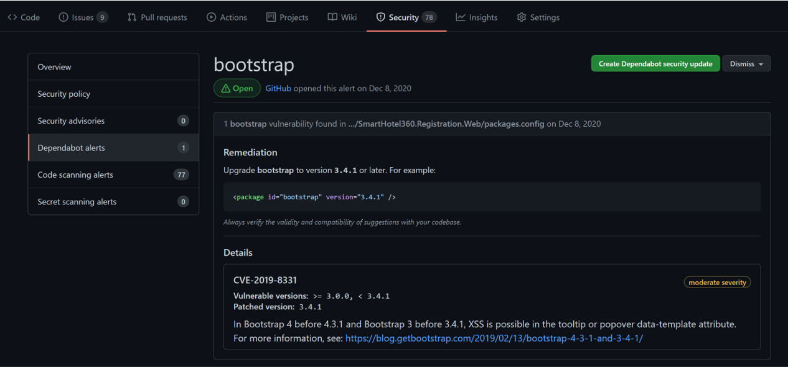

Home | Module 1 | Module 2 | Module 3 | Module 4 |
Module 3 - Static Code Analysis
Static Code Analysis ensures that the application code in the repository will always meet certain level of compliance and security requirements. GitHub provides many static code analysis tools which can be used out of the box. This module will provide an understanding of various static analysis tools that can be used in GitHub.
Exercise 1: GitHub Advanced Security: Code & Secret Scanning
To complete this exercise, you will enable GitHub Advanced Security features and integrate CodeQL for the bookings application.
Prerequisites - Exercise 1
- CI Module 2 must be completed and the same branch created in module 1 is supposed to be used in this module.
- GitHub Advanced Security has been enabled for your repository.
- You should have Admin access to the repository.
Before starting, in your GitHub repository switch the branch from main to the branch you created in CI Module 1.
Firstly, we will enable static code analysis settings in the GitHub Repository. Go to
Settings > Security & Analysis. Enable GitHub Advanced Security, Secret Scanning, Dependency graph and Dependabot alerts.
Now, lets configure one of code scanning tools: CodeQL. Select
Go to code scanning > Set up more code scanning tools. Find CodeQL Analysis and select Set up this workflow. We won't need to update any configurations as the predefined settings are already pointing to the csharp and javascript languages.strategy: fail-fast: false matrix: language: [ 'csharp', 'javascript' ]However, we will be editing the
onsection and adding theworkflow_dispatchoption. This section should look like this:on: push: branches: [ main ] pull_request: # The branches below must be a subset of the branches above branches: [ main ] schedule: - cron: '19 2 * * 1' workflow_dispatch: branches: [ main, users/** ]Now that we have enabled CodeQL & Secret scanning, lets see where exactly are the alerts visible. These alerts are visible under the Security tab in GitHub. CodeQL alerts will appear under Code scanning alerts and any exposed secrets are notified via email as well as listed over here.
In the CodeQL errors you will mainly find these 4 sections:
- Error highlighted code
- Recommendations to fix the error
- Example of error fix
- References to understand error
Exercise 2: GitHub Advanced Security: Dependency Graph & Dependabot alerts
To complete this exercise, you will analyze the dependency graph for bookings application, and understand how dependabot alerts can be utilized to keep the dependencies used in the application up to date.
Prerequisites - Exercise 2
- CI Module 3 - Exercise 1 must be completed.
- GitHub Advanced Security has been enabled for your repository.
- You should have Admin access to the repository.
Dependency graph is a great tool to have a collated view of all dependencies used by the application. This can be found at
Insights > Dependency Graph.With Dependabot alerts, you can recognize deprecated dependencies which may have security flaws, which the hackers utilize to get into the system. Thus using dependabot alerts, such dependencies can be easily identified and updated.
Each dependabot alert, has 2 main sections:
- Remediation
- Details related to security flaws

If you think the remediation mentioned is good enough and you want to go with it, you can go ahead and directly fix it in your application by selecting Create Dependabot security update. This will take about 2 minutes, after which a dependabot will automatically create a PR to merge with master. Verify the PR once, and once you are 100% sure, go ahead and merge it with main. If you can't see the PR, please refresh.

Key Takeaways
- GitHub Advanced Security helps ensure application code follows appropriate standards and has latest security updates.
- With secret scanning, we can prevent secrets from being exposed via application code.
- Automatic dependabot alerts and security updates ensure application dependencies are always updated to latest version.